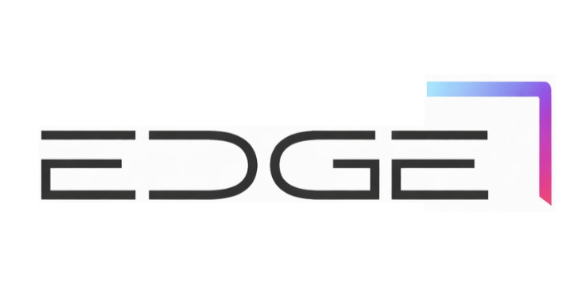

Stand 3 vom 29.07.: E-Mittelstriche durchgezogen, Verlauf bis Rot, und nach der zweiten Runde sind die E's wieder komplett frei, ganz ohne linken Strich, während D und G in vollen Halbkreisen laufen.
Links deine Referenz, rechts der neue Stand. Die Schrift ist dein Schnitt: breiter, enger gesperrt, durchgezogene Mittelstriche, weiche Rundungen. Die E's stehen dabei ganz ohne linken Strich, so wie in der allerersten Skizze. Nur das Pink am Ende des Verlaufs ist dem EDGE-Rot gewichen.

Ich habe deine Vorlage pixelgenau vermessen und auf die Versalhöhe 160 der Marke normalisiert. Das sind die vier Merkmale, die den Charakter tragen.
Kein Stamm, nichts berührt sich. Der Mittelstrich läuft auf 85 Prozent der Breite durch, nicht mehr der halbe Stummel, aber die letzte Lücke bleibt, damit das E ein E ist und nicht drei gleiche Striche.
Beide runden im vollen Halbkreis, Radius 71, die weichste Kurve, die die Versalhöhe hergibt. Das G trägt einen langen Sporn bis zur Außenkante, und seine obere Gerade endet eine halbe Strichstärke früher, wie bei dir.
| Merkmal | Wert | Gemessen an deiner Vorlage |
|---|---|---|
| Strichstärke | 18 | Dein Schnitt liegt bei 10 zu 85 Versal, das ist exakt die 18 der Hauptmarke. Beide Schriften teilen sich damit dieselbe Leiter. |
| E-Breite | 220 | Deine Buchstaben sind breiter als die der Hauptmarke (200). Übernommen. |
| Mittelbalken E | 85 % | Durchgezogen bis kurz vor die Kante, frei schwebend wie die anderen beiden. Die restlichen 15 Prozent halten das E lesbar. |
| Sperrung | 35 | Halb so weit wie die Hauptmarke (70). Dein Wortbild ist dichter, kompakter, logohafter. |
| D- und G-Rundung | R 71 | Voller Halbkreis, weicher geht es bei dieser Versalhöhe nicht. Wortbreite gesamt 1051, deine Vorlage gemessen 1052. |
Beim Vermessen kam etwas Schönes heraus: In deiner Skizze liegt die Mitte des oberen Schenkels fast exakt über dem Ende des Wortes. Das ist jetzt die Regel. Die Ecke balanciert auf der Wortkante, halb drüber, halb draußen.
| Regel | Wert | Bedeutung |
|---|---|---|
| Strichstärke | 30 | Die Leiter der Marke: 11, 18, 30, jeder Schritt das 1,64-fache. Deine Skizze lag gemessen bei 1,7. |
| Position | Mitte = 1051 | Die Mitte des oberen Schenkels liegt exakt auf der rechten Wortkante. Halb rahmt sie das Wort, halb zeigt sie hinaus. |
| Schenkel oben | 300 | Zehnfache Strichstärke. In deiner Skizze gemessen 292. |
| Abstand zum Wort | 80 | Eine halbe Versalhöhe Luft zwischen Wort und Ecke, gemessen 83. |
| Schenkel rechts | bis 160 | Läuft bis zur Grundlinie des Wortes, nicht mehr nur bis zur Mitte. Wie bei dir. |
| Schrägschnitt | 16 | Das untere Ende ist angeschnitten, außen läuft es 16 tiefer aus. Die Kante endet selbst mit einer Kante. Direkt aus deiner Skizze übernommen. |
| Radien | 22 außen · 6 innen | Außen weich genug fürs Auge, innen fast scharf. Vorher war die Ecke als runder Strich gebaut, das war zu weich. |
Monochrom für Briefbogen, Rechnung, Prägung und alles Kleine. Der Verlauf für Website, Deck-Titel und Social.
Eck-Klammern allein benutzen viele, erst das E macht sie zu EDGE. Gleiche Regeln wie im Lockup: Schenkelmitte auf der Buchstabenkante, Abstand 80, bis zur Grundlinie mit Schrägschnitt.
Fold bleibt erstmal das Zeichen der Hauptmarke, so der Stand. Beide kommen aus demselben Raster, sie erzählen die Kante nur anders.
Alle Fassungen als SVG, Stand 3, direkt in Figma oder Illustrator zu öffnen. Die Geometrie-Quelle ist generator.py im selben Ordner.
{kind=link}
{kind=link}
{kind=link}
{kind=link}
{kind=link}
{kind=link}